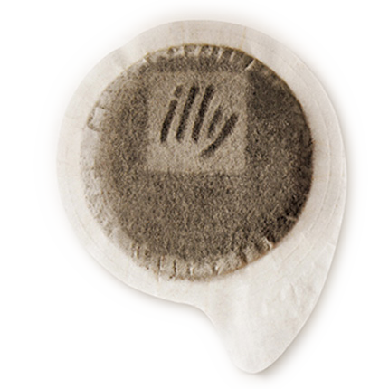
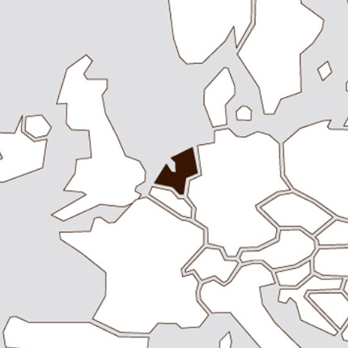
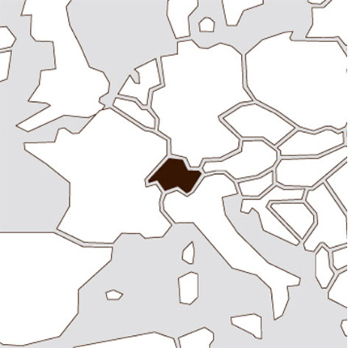

HISTORY
1930s ~ 1990s

2000s ~ Today

1933년 설립연도부터 현재까지의 주요 연혁을 내림차순으로 나열
Today
International Coffee Award
illy는 재능있는 인재와 커피 재배자의 품질향상의 노력에 경의를 표하기 위해 Ernesto illy International Coffee Award를 매년 개최하고 있습니다.

2015
국제 커피 재단의 일원인 illy는 2015년 밀라노에서 열린
엑스포 공식파트너로써, 커피 파빌리온인 커피 클러스터와 이벤트 프로그램을 통해 1,300 만 명이 넘는 사람들을 유치하였습니다.
2013
Ethisphere Institute가 작성하는
세계에서 가장 윤리적인 기업 목록에 포함되었습니다.
2008
코카콜라와 illy의 협업으로 병에 담긴 illy 블렌드가
ready to go로 탄생합니다.
2006
주입 및 유화의 두 가지 단계에 5가지 국제 특허가 적용되는 Iperespresso 캡슐은 강렬한 향과 부드러움을 가진 커피를 추출합니다.

2003
illy는 espressamente illy라는 브랜드로,
본격적인 이탈리아 바 프로젝트를 시작합니다. 이어 2015년에 illy Caffè와 illy Shop이 시작됩니다.
1999
전 세계에 커피 문화를 전파하고 품질을 향상시키기 위한
지식을 공유하자는 사명을 갖고 있는 이 곳은 식물에서부터 컵에 이르기까지의 커피의 전체 공급망을 다룹니다.
1995
Illetta 발명 60년 후, 가정용 에스프레소 기기인
Francis Francis X1이 출시 되었습니다. 이는 현재까지도 스타일의 아이콘으로 사랑받고 있습니다.

1992
장식용 도자기의 예술에 대한 현대적인 해석인
illy Art Collection은, 수세기동안 많은 예술가들과의 협업으로 인해 세계에서 가장 큰 예술품 컬렉션이
되었습니다.
1980
illy는 이탈리안 로스터로는 최초로 바다를 넘어 미국 전역에 에스프레소 문화를 수출을 시작합니다.

1974
on the market
illy는 언제 어디서나 완벽한 에스프레소를 만들 수 있도록 탬핑 되어진 1회분의 분쇄 커피인 포드를 판매하는 최초의 회사가 되었습니다. 이것은 커피 역사의 급진적인 혁신과 더불어 일리의 국제화를 위한 길을 열어줍니다.
1965
illy는 이탈리아 Via Flavia에 위치한 현재의 위치로
본사를 이전합니다. 창립자 Ernesto Illy는 이제 국제 개발에 집중하게 됩니다.
1962
illy는 네덜란드에 첫 지점을 두고 북유럽에 진출했습니다.
1957
신제품담당 부서에서 가정용의 작고 둥근 모양을 가진
분쇄커피 캔을 만들게 됩니다.
1939
illy는 스위스를 기반으로 해외로 수출을 시작하면서 유럽의 에스프레소 문화 대사 역할을 하게 됩니다.
1935
현재의 커피 머신의 최초의 모델인 일레따는
증기를 압축 공기로 대체하는 혁신적인 에스프레소 커피 기계로써 근대 커피 머신의 발전에 지대한 공헌을 했습니다.
1934
illy는 혁신적인 질소압축포장 시스템을 특허권으로
보유하고 있으며, 지금까지도 제품을 포장하는데에 적용되고 있습니다. 이로써, illy만의 아로마와 신선함을 유지하면서 전세계 어디서나 만날 수 있습니다.
1933
헝가리 출신의 프란체스코 일리(Francesco Illy)는
제1차 세계대전이 끝난 후 비엔나에서 이탈리아의 커피도시 트리에스테(Trieste)로 여행합니다. 이를 계기로 그는 세상에서 가장 좋은 커피를 제공한다는 목표로 1933년에 일리 카페를 설립했습니다.